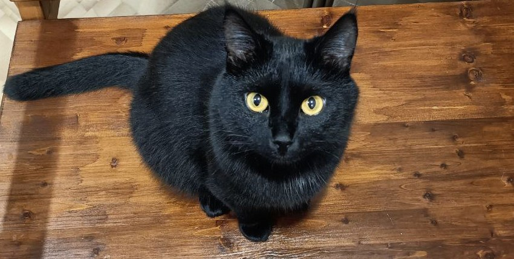

This cute little bundle of happiness was born somwhere sometime in November 2020. Until that time it was strictly forbidden to have a cat in our flat, even though everyone in my family is (secret) animal lover. One day my mom was scrolling through her SNS and found a cute kitten which looked like a little bear and needed a shelter. She just LOVES bears, and i knew which buttons to click. Like that, i persuaded her, and everything after that was a piece of cake.
He's pretty playful by nature, but not too much. Murchik is scared of babies, but he's okay with newcomers. He usually likes my friends, however, he preferes some of them to others. He's really picky with food and only eats "human" food when it's sliced and put on the palm of a hand (mom's palm >>> everything else).
